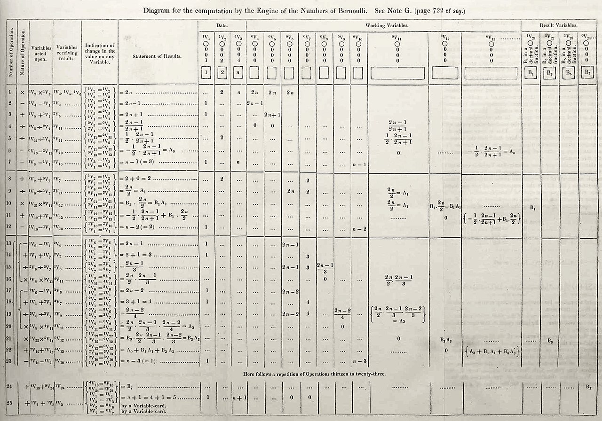

Fondamentaux en programmation - Python
Un peu d’histoire ?
Premier programme informatique

Machine analytique
Créer par Charles Babbage en 1834
Assilimé au premier ordinateur

Alan Turing

L’objection de Lady Lovelace par Alan Turing
C’est quoi un programme informatique ?
C’est quoi qu’un algorithme ?
Qu’est qu’un langage de programation ?
Principe de programmation
Interprété ou compilé ?
Compilé
Interprété
Pourquoi Python, c’est cool ?

Langage interprété
Haut niveau
Syntaxe simple et comprénsible